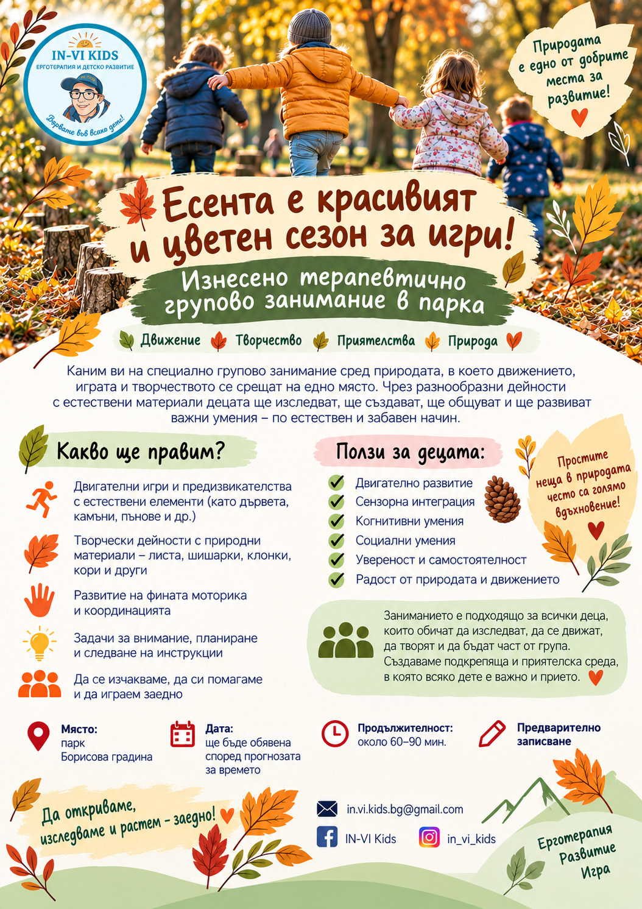
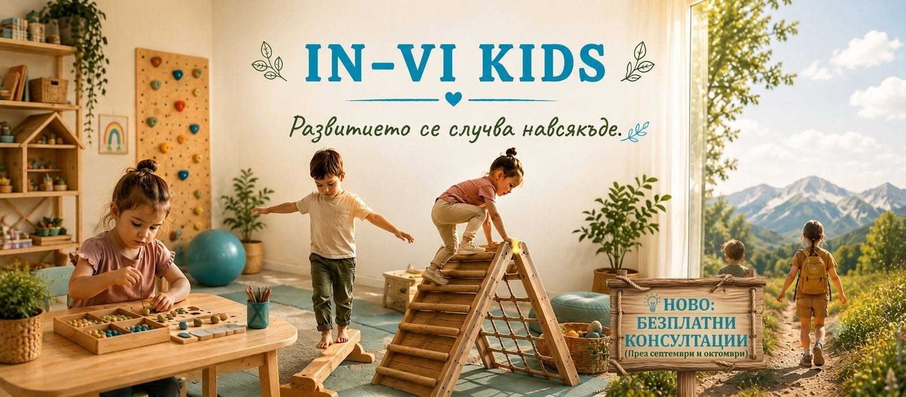
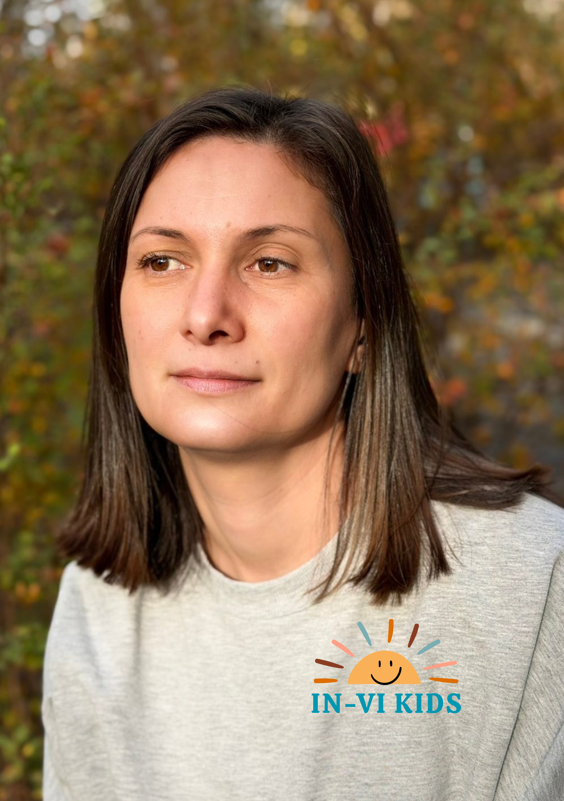
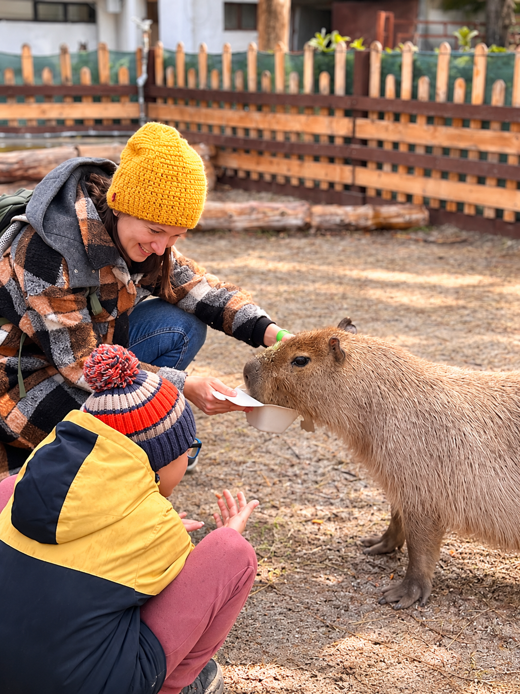
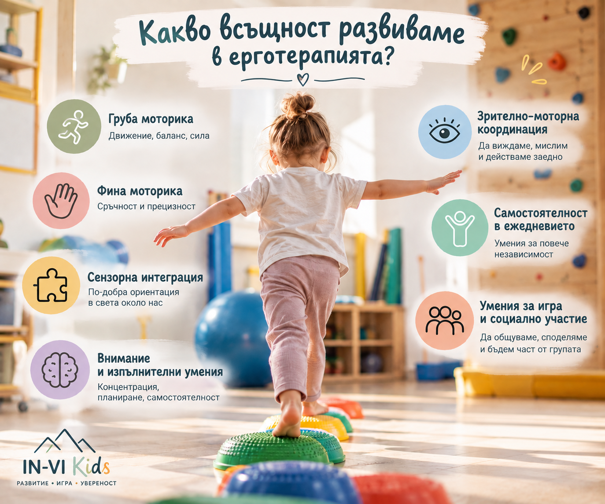

ЕРГОТЕРАПИЯ И ДЕТСКО РАЗВИТИЕ
Развитие чрез игра, движение и ежедневни умения.
Всяко дете има свой път на развитие. Целта ни е да създадем среда и да подберем подходи, които му дават увереност да изследва света и да разгърне своя потенциал.

Какво е ерготерапия?
Ерготерапията подкрепя детето в уменията, които са му нужни, за да участва по-уверено и самостоятелно в ежедневието – в играта, ученето, самообслужването и общуването.
Работим чрез игра, движение и занимания, съобразени с индивидуалните нужди, възрастта и силните страни на всяко дете.


ЗА НАС
Историята на Ина и Влади – детето, което вдъхнови
създаването на IN-VI
Kids.
„IN-VI Kids се роди от личен опит и от вярата, че всяко дете заслужава да бъде разбрано, подкрепено и прието такова, каквото е.“
Ина – майка, съпруга и ерготерапевт
Аз съм човек, който знае какво означава да търсиш отговори за своето дете. Вярвам, че развитието не се случва само в терапевтичната зала, а и в играта, движението, ежедневните дейности и всички онези малки преживявания, които съпътстват детето всеки ден.
Завършила съм маркетинг и дълго време работих в тази сфера. С ерготерапията се срещнах, когато заведох Влади в терапевтична зала. Бях впечатлена от начина, по който ерготерапията достига до детето – чрез игра, движение и доверие. Това ме накара да погледна на развитието по различен начин и да избера нов професионален път.
Днес съм дипломиран ерготерапевт и продължавам да надграждам знанията си чрез специализирани обучения и сертификационни курсове. Като ерготерапевт съм част и от екипа на „Местенцето“, където работя с деца и техните семейства. За мен всяко дете е различно и именно затова подходът към него трябва да бъде индивидуален.
Допълнителни квалификации:
- MNRI® Dynamic and Postural Reflex Integration
- MNRI® Lifelong Reflex Integration
- DIR 101: An Introduction to DIR® and DIRFloortime®
Имам особен професионален интерес към човешките рефлекси и тяхната роля в развитието на детето, както и към подходи, които поставят играта, взаимоотношението и индивидуалните особености на детето в центъра на работата.
УСЛУГИ
Как можем да работим заедно?
В IN-VI Kids предлагаме занимания, съобразени с индивидуалните потребности, възрастта и целите на всяко дете.
Консултация
Среща с родител за обсъждане развитието, индивидуалните потребности и ежедневните предизвикателства на детето. Заедно обсъждаме подходящи насоки за подкрепа и изготвяме индивидуален план за развитието на детето.
Индивидуална ерготерапевтична сесия
Индивидуална работа с детето, съобразена с неговите потребности, силни страни и конкретни цели. Чрез игра и подходящи за детето занимания развиваме уменията, необходими за по-голяма самостоятелност и участие в ежедневието.
Групови занимания
Занимания в малка група, в които чрез игра и преживяване развиваме умения за участие, взаимодействие и самостоятелност.
ВЯРВАМЕ ЧЕ:
Терапията трябва да бъде съобразена с детето, а не детето с терапията.
Как започваме?
Преди да започнем работа, отделяме време да разберем силните страни на детето, какво го затруднява и какви са очакванията на семейството.
След това извършваме оценка на развитието и заедно поставяме ясни и реалистични цели.
Няма универсален подход. Подбираме методите и дейностите според индивидуалните нужди на детето. Ако даден подход не носи желания резултат, променяме метода и търсим нови решения.
КАКВО РАЗВИВАМЕ
Умения, които помагат на детето да участва
по-пълноценно в своя живот
Груба моторика
Развиваме координацията, баланса и постуралния контрол, необходими за увереното и безопасно движение на детето. Насърчаваме умения като ходене, бягане, скачане, катерене, люлеене,хвърляне и хващане на топка, както и стабилността и равновесието и много други умения.
Фина моторика
Развиваме уменията за малки и прецизни движения на ръцете и пръстите, необходими за творчеството, детската градина, училището и ежедневието. Работим за умения като рисуване, оцветяване, рязане с ножица, лепене, нанизване, закопчаване на копчета, използване на прибори и писане.
Сензорна интеграция
Подкрепяме детето в обработването и организирането на информацията, която получава чрез сетивата си – допир, движение, звук, зрение и усещане за позицията на тялото в пространството. Това му помага да се адаптира по-лесно, да участва в играта, ежедневните дейности и да се чувства по-уверено в тялото и средата си.
Самостоятелност и ежедневни умения
Изграждаме уменията, които помагат на детето да се справя по-уверено и самостоятелно с ежедневните дейности – обличане, хранене, лична хигиена, организация и грижа за себе си и своите вещи.Целта е детето постепенно да се справя все по-уверено и самостоятелно с дейностите от ежедневието.
Умения за учене и подготовка за училище
Подкрепяме развитието на уменията, необходими за успешно участие в детската градина и училище – внимание и концентрация, следване на инструкции, графомоторни умения, подготовка за писане, организация и работа с учебни материали.
Социални умения и взаимодействие
Насърчаваме уменията за взаимодействие с другите – участие в група, редуване, споделяне, следване на правила, съвместна игра и изграждане на увереност в общуването с деца и възрастни.
НОВО В IN-VI KIDS
Актуални инициативи и полезни теми.
Предстоящо
Изнесено терапевтично групово занимание сред природата, в което движението, играта и творчеството се срещат.
Каним децата на специално групово занимание сред природата. Чрез разнообразни дейности с естествени материали ще изследваме, ще създаваме, ще общуваме и ще развиваме важни умения по естествен и забавен начин.
- Двигателни игри и предизвикателства с естествени елементи
- Творчески дейности с листа, шишарки, клонки, кори и други природни материали
- Развитие на фината моторика и координацията
- Задачи за внимание, планиране и следване на инструкции
- Игри за общуване, взаимопомощ и участие в група
Място: парк „Борисова градина“
Дата: ще бъде обявена според
прогнозата за времето
Продължителност: около 60–90
мин.
Участие: с предварително записване.
Актуално
Безплатни консултации през септември и октомври
В началото на учебната година IN-VI Kids предлага възможност за безплатна консултация.
Консултацията е възможност да споделите какво ви затруднява в ежедневието и да обсъдим дали ерготерапията би била подходяща за вашето дете.
Подходящо за деца в ранна детска възраст, детска градина и училищна възраст.
За записване: свържете се с IN-VI Kids по телефон или имейл.

Полезно
Какво всъщност развиваме в ерготерапията?
Не работим само за едно умение. Работим за участието на детето в неговия живот.
Фината и грубата моторика, балансът и координацията, вниманието, моторното планиране, сензорната преработка, зрително-моторната координация, социалните умения и самостоятелността са умения, които имат смисъл, когато помагат на детето да участва по-уверено в ежедневието.
Терапията започва в кабинета, но промяната се случва всеки ден – у дома, в детската градина, в училище, в играта и в реалните преживявания.
ОТЗИВИ ОТ РОДИТЕЛИ
Думите, да, те са най-ценната обратна връзка за нас.
★★★★★
Човек, който работи от сърце и с мисия в подкрепа на децата. Личната ѝ кауза личи във всичко, което прави, и ѝ дава енергията, която всеки специалист в тази област трябва да притежава!
Свилен Дечев★★★★★
„Страхотен специалист! Спокойна, внимателна, с позитивно излъчване, изслушвате и ми дава адекватни насоки. Отделя необходимото време и работи активно с детето ми. Обяснява всичко спокойно и на разбираем език. Препоръчвам!!!“
Теодора Стамболийска★★★★★
„Много сме доволни от In Vi Kids и най-вече от Ина! Тя е страхотен специалист. Наистина разбира от какво имат нужда децата със СОП и много помага и на мен да ги разбирам по-добре. Много слънчев, спокоен и позитивен човек. Има нещо магично в начина, по който работи с децата, истинска Мери Попинс за нашите специални деца. Препоръчвам мястото с две ръце!"
Ивета Иванова★★★★★
„Препоръчвам Ина и IN VI KIDS с две ръце! Дъщеря ми ходи с огромно желание на терапия и няма търпение за всяка следваща среща. Ина подхожда със сърце, отговорност и професионализъм към децата! Радваме се, че животът ни срещна с нея! ❤️“
Росица ГеоргиеваИскате да споделите своя опит с IN-VI Kids?
★ Остави отзив в GoogleКАК ДА НИ НАМЕРИТЕ
IN-VI Kids се намира до метростанция „Театрална“.
Ще ни намерите на ул. „проф. Милко Бичев“ 1, София
в непосредствена близост до парк Заимов.
Как да стигна:
🚇 МетроЛиния 3 · метростанция „Театрална“
🚌 Автобуси11 · 213 · 404
🚋 Трамваи20 · 21 · 22
СВЪРЖИ СЕ С НАС И ЗАПАЗИ ЧАС
+359 895 47 17 52 in.vi.kids.bg@gmail.comул. „проф. Милко Бичев“ 1
до метростанция „Театрална“, София